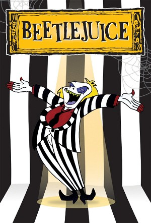

Beetlejuice (1989)
HorrorFantasyFamilyComedyChildrenAnimationAdventure
| Year | 1989 |
|---|---|
| Rating | TV-Y |
| Status | Completed |
| Seasons | 4 |
| Episodes | 97 |
| Genre | Horror, Fantasy, Family, Comedy, Children, Animation, Adventure |
Based on the movie, created by Tim Burton, this series is focused on Beetlejuice and Lydia teamed up to carry on multiple exciting adventures. Beetlejuice is a liar who cheats at everything. The deceased maniacal and energetic transformer always goes around having fun, breaking every rule and law. Lydia Deetz is a social outcast and a goth. Always dressed in black, she loves horror movies, and is Beetlejuice's best friend. She is calm and level-headed.
Episodes
Season 1
| # | Title | Air Date | Synopsis |
|---|---|---|---|
| 1 | Critter Sitters | 1989-09-09 | Beetlejuice needs some cash to buy Lydia a present so when she gets a job baby-sitting, he follows suit. But Neitherworld babies are a bit more of a handful than Outerworld ones, and Beetlejuice gets dragged before Judge |
| 2 | The Big Face Off / Skeletons in the Closet | 1989-09-16 | It's Beetlejuice and Lydia versus the reigning King and Queen of Gross on a popular Neitherworld TV show. Do our heroes have any chance of winning the big gross-off with Beetlejuice feeling below par? / The skeletons in |
| 4 | A Dandy Handy Man / Out of My Mind | 1989-09-23 | Lydia is getting ready for the big photo show, but she can't decide which of her pictures is the best. Beetlejuice loves all of her work, and decides he wants to buy whichever photo she picks--but he doesn't have any mon |
| 6 | Stage Fright / Spooky Tree | 1989-09-30 | Miss Shannon's school is putting on Romeo and Juliet, and Lydia tries out for the part of Juliet. But Clare wants it too and sabotages Lydia's audition. For revenge, Lydia becomes the costume designer and designs a costu |
| 8 | Laugh of the Party | 1989-10-07 | It's Halloween and Clare's throwing the biggest bash in Peaceful Pines-until Lydia announces that she, too will throw a party. But there are a few problems: 1) all she has to wear is a cute pink bunny costume; 2) there w |
| 9 | Worm Welcome | 1989-10-14 | Beetlejuice has a run-in with a newly-hatched Sandworm, and Lydia accidentally calls him out of the Neitherworld while he's in contact with it, so they both teleport to the Outerworld. While the Neitherworld locals think |
| 10 | Bad Neighbor Beetlejuice / Campfire Ghouls | 1989-10-21 | Beetlejuice's neighbours kick him out, so he tries to be a 'good neighbour.' But unfortunately, Beetlejuice's idea of a good neighbour isn't quite the same one his friends have. It looks like Beetlejuice is out of a plac |
| 12 | Pest o' the West | 1989-10-28 | Beetlejuice takes Lydia on a trip to a Neitherworld Wild West town, where the locals promptly make Beetlejuice their new sheriff. Can you guess why? Naturally, its because Bully the Crud is on his way to run the sheriff |
| 13 | Bizarre Bazaar / Pat on the Back | 1989-11-04 | Miss Shannon teams up Lydia and Clare to run this year's haunted house at the bazaar. Lydia's got some good and scary ideas, but Clare's got other plans...Not to worry, because Beetlejuice's got some plans of his own. / |
| 15 | Poopsie / It's the Pits | 1989-11-11 | The Monster Across the Street is going to a Monster Across the Street convention (you didn't know they had those, did you?) and he leaves Poopsie in Beetlejuice's care for the day. I'll leave the rest of this synopsis to |
| 17 | Prince of the Neitherworld | 1989-11-18 | Neitherworld royalty Prince Vince falls in love with Lydia and asks Beetlejuice for some help in winning her heart. After landing himself a job as Vince's court jester, Beetlejuice agrees-but quickly changes his mind whe |
| 18 | Quit While You're a Head | 1989-12-02 | Beetlejuice's head is kidnapped by headhunters. With the help of Captain Kidder, Lydia and Beetlejuice's body track the hunters down to Nobody Atoll, where they must face more than just head hunters. |
| 19 | Cousin B.J. / Beetlejuice's Parents | 1989-12-09 | Lydia's Aunt Zapora and Uncle Danport (Delia's family) and Aunt May and Uncle Clyde (Charles' family) come for a visit. To liven things up, Beetlejuice poses as ""Cousin B.J."", and boy, does he liven things up! / Yes, |
Season 2
| # | Title | Air Date | Synopsis |
|---|---|---|---|
| 1 | Dragster of Doom | 1990-09-08 | Beetlejuice and Lydia decide that it's time for them to have a car of their own, so they rebuild a salvaged one they find in a Neitherworld wrecking yard. But Beetlejuice delivers Lydia an abnormal carburetor for install |
| 2 | Scare and Scare Alike / Spooky Boo-tique | 1990-09-15 | It's Scary Fool's Day in the Neitherworld and Beetlejuice and Lydia are trying to outdo each other. / Lydia's creepy fashions gain the girls a spot in the Peaceful Pines Mondo Mall -- only no one's interested. So Mr. Bee |
| 4 | Driven Crazy | 1990-09-22 | Beetlejuice, Lydia and Doomie enter the Neitherworld Groan Prix, where they face possible defeat by Scuzzo and Fuzzo. |
| 5 | Scummer Vacation | 1990-09-29 | Lydia's parents want to go on a vacation, so Beetlejuice, posing as Mr. Beetleman, offers his services as a tour guide -- in the Neitherworld. |
| 6 | Bewitched, Bothered & Beetlejuiced | 1990-10-06 | It's Halloween, and Lydia is spending the night in the Neitherworld. Unfortunately, Percy tags along and gets catnapped by a witch and taken to the Witches' Ball. Beetlejuice and Lydia must masquerade as witches to sneak |
| 7 | Dr. Beetle & Mr. Juice / Running Scared | 1990-10-13 | Beetlejuice invents a cologne that changes the personality of anyone it comes in contact with into its polar opposite. When Lydia gets sprayed with it, she becomes a wild, prank-pulling criminal, and, taking Beetlejuice |
| 9 | The Really Odd Couple / A-Ha! | 1990-10-20 | When Beetlejuice blows up the Monster Across the Street's house, he is obligated to take the Monster and Poopsie in (or Jacques and Ginger will rat him out). Desperate to rid himself of his unwanted roommates, BJ even tr |
| 11 | Uncle B.J.'s Roadhouse / Scarecrow / The Son Dad Never Had | 1990-10-27 | Beetlejuice hosts a morbid Pee-wee's Playhouse-esque children's show. / Beetlejuice takes a job as a scarecrow at a beetle farm. / When Lydia is too busy to spend time with Charles, Beetlejuice (seeing a scam) steps in a |
Season 3
| # | Title | Air Date | Synopsis |
|---|---|---|---|
| 1 | Mom's Best Friend | 1991-09-07 | When Beetlejuice is collared while in dog form, he gets stuck that way. Lydia calls him to the Outerworld where Delia promptly adopts him as the dog she always wanted. |
| 2 | Back to School Ghoul | 1991-09-14 | Beetlejuice's license to drive people crazy is revoked, as he didn't finish Kindergarten. Then, Lydia must help him out in order to graduate from Kindergarten and win his license back. |
| 3 | Doomie's Romance | 1991-09-21 | Doomie falls in love with the Mayor's pink car (which Doomie dubs 'Pinky'). The down side is, Pinky isn't alive like Doomie. Besides that, both Beetlejuice and Mayor Maynot are adamantly against the relationship. How can |
| 4 | Ghost to Ghost | 1991-09-28 | Delia holds a seance and summons Lydia's favourite (deceased) actor, Boris To Death. Although Lydia is thrilled by the visit, BJ is less than ecstatic. But when Boris reveals his evil plan to kick the Deetzes out of thei |
| 5 | Spitting Image | 1991-10-05 | When BJ gets split while in amoebae form, Lydia suddenly finds herself in double the weirdness as usual. And it just goes to prove that no one can get along with Beetlejuice, not even himself. |
| 6 | Awards to the Wise | 1991-10-05 | When people all around him start winning trivial awards, Beetlejuice decides that he wants one too. But who in their right mind would give Beetlejuice an award? |
| 7 | The Prince of Rock and Roll | 1991-10-12 | Prince Vince wishes that his subjects would love him, so he decides to be a rock and roll star. But his music is so depressing everyone hates it. In order to spare his feelings, Lydia tells him his music is wonderful. Th |
| 8 | A Ghoul and His Money | 1991-10-19 | Beetlejuice wins a whole lot of money under one condition. He can't juice anyone again or the cash gets revoked. The situation is embraced warmly by the Neitherworld's stinking rich (who stink in more ways than BJ does). |
| 9 | Brides of Funkenstein | 1991-10-19 | It's the Battle Of the Bands: Lydia's band, The Brides of Funkenstein, and Clare's band, The Clarenettes. Which band will get to perform at the annual girl's/boy's school mixer? |
| 10 | Beetledude | 1991-10-26 | The Deetzes get new neighbours, and the new kid on the block, Ramon, wants to be just like Mr. Beetleman. But its a lot harder to get out of trouble after grossing people out when you don't have magic, so Lydia is forced |
| 11 | The Farmer in the Smell | 1991-10-26 | Lydia heads off to her Aunt May and Uncle Clyde's farm, and Beetlejuice tags along as Mr. Beetleman. But with all the work May and Clyde give BJ, how will he ever have any fun, and come to think of it, how will Lydia? |
Season 4
| # | Title | Air Date | Synopsis |
|---|---|---|---|
| 1 | You're History | 1991-09-09 | Beetlejuice gets a bunch of famous dead historical figures to appear on Neitherworld TV. |
| 2 | Raging Skull | 1991-09-10 | Jacques tries to achieve his afterlife-long dream of becoming Mr. Neitherworld, with one obstacle: namely, Armhold Musclehugger, the current reigning King of Fitness. How can someone with no muscles possibly compete with |
| 3 | Sore Feet | 1991-09-11 | Beetlejuice's feet decide they aren't being treated right and strike out on their own. BJ must find them before they get themselves in trouble. |
| 4 | Fast Food | 1991-09-12 | It's BJ and Lydia's Frankenburgers vs. Scuzzo's Clown Burgers in the biggest fast-food-fight of the century. |
| 5 | Queasy Rider | 1991-09-13 | Beetlejuice gets tired of Doomie's tendency to be nice, so he builds a new vehicle: Road Hawg, the meanest chopper around, but Doomie's the only one who can save BJ from Road Hawg's vicious new gang. |
| 6 | How Green is My Gallery | 1991-09-16 | Delia's art is a flop in Peaceful Pines, so Delia and BJ decide to take her to a Neitherworld art colony, where her art will be truly appreciated. But with the good comes the bad! |
| 7 | Keeping Up with the Boneses | 1991-09-17 | When BJ's new, rich neighbours move in, Beetlejuice goes out and gets himself a Monster Charge Card so he can have a bigger house and more stuff. But when the repo men arrive, BJ has to make a tough choice. |
| 8 | Pranks for the Memories | 1991-09-18 | BJ's got Scuzzo's brain, Scuzzo's got no brain, and BJ's brain is out to rule the Neitherworld. Get it? |
| 9 | Caddy Shock | 1991-09-19 | Lydia is stuck competing against Clare in her school's golf P.E. course (hey, it's a private school, after all), and Clare just happens to be the reigning teen golf champ of Peaceful Pines. In an attempt to help Lydia ou |
| 10 | Two Heads Are Better Than None | 1991-09-20 | Beetlejuice says the wrong thing and gets his head put onto the Monster's body--now the Monster's got two heads, and BJ's body is left to wander. |
| 11 | Beauty and the Beetle | 1991-09-23 | Coincidentally on the very same day Lydia has doubts about her own beauty, the great beast Thing Thong, who steals beautiful things because he feels he is himself ugly, kidnaps her. While Lydia helps Thong find confidenc |
| 12 | Creepy Cookies | 1991-09-24 | When Lydia joins the Happy-Faced Girls, Beetlejuice laughs--until he finds out how much money a cookie drive can pull in. He rushes back to the Neitherworld where he assembles the Sappy-Face Ghouls and gives them some of |
| 13 | Poe Pourri | 1991-09-25 | Edgar Allen Poe comes to BJ's Roadhouse in search of his lost Lenore. This is followed by a series of nightmares Beetlejuice experiences that are loosely based on Poe's works. |
| 14 | Ear's Looking at You | 1991-09-26 | A Sam Spade spoof featuring two ears cut off from a family fortune. |
| 15 | Beetlebones | 1991-09-27 | Beetlejuice's sophisticated skeleton escapes from his skin and runs off. Lydia, Jacques, and BJ's skin must recapture Beetlebones--before the Skeleton Crew does. |
| 16 | Smell-a-Thon | 1991-09-30 | When BJ finds out about the Save-The-Whales Telethon Lydia is involved in, he gets an idea: hold his own telethon and make a fortune! So he holds a Save-The-Smells Telethon to do just that--until he actually, truly, begi |
| 17 | The Miss Beauty-Juice Pageant | 1991-10-01 | Beetlejuice wants to enter the First Neitherworld Beauty Pageant (the prize is a Ton O' Cash), but is turned down because he's a man. Determined to win the prize, BJ launches a ""Men Are Beautiful Too"" campaign, closely |
| 18 | Sappiest Place on Earth | 1991-10-02 | When the Happy Face Girls' outing is called on account of rain, BJ (as Denmother MacCree) takes them to Grislyland, the Neitherworld's newest theme park. But Grislyland's patron cartoon character, Bartholomew Batt, is ou |
| 19 | Brinkadoom | 1991-10-03 | BJ, Lydia, and Doomie accidentally tumble into Brinkadoom, a cursed village which disappears for an eternity as soon as all its inhabitants fall asleep. Can they find their way out before that happens? |
| 20 | Foreign Exchange | 1991-10-04 | When a beautiful Scandinavian exchange student arrives at Miss Shannon's school, Clare thinks she will burst with envy--until she relieves her fury by embarrassing the exchange student in front of everybody. To get even, |
| 21 | Family Scarelooms | 1991-10-07 | BJ's parents want to join the Society for the Oldest and Moldiest Families of the Neitherworld, but they need the Juice family coat of arms to prove their lineage. Unfortunately, the coat is somewhere in BJ's room, which |
| 22 | Them Bones, Them Bones, Them Funny Bones | 1991-10-08 | Lydia is to MC at her school's talent night, but she's afraid she isn't funny enough. So--BJ lends her his funny bone. But what's Beetlejuice without a funny bone?? |
| 23 | Hotel Hello | 1991-10-09 | Charles really needs a weekend to relax, so Mr. Beetleman takes the Deetzes to Hotel Hello in the Neitherworld. But with Charles stressing out over every little thing, not to mention a vampire after Delia's neck, what ki |
| 24 | Goody Two Shoes | 1991-10-10 | It's 'Good Neighbor Day' in the Neitherworld, when being nice is a law. Of course, BJ won't stand for it, and causes trouble...which lures in Goody Two Shoes, a Fairy from the Bureau of Sweetness and Prissiness (BSnP). W |
| 25 | Vidiots | 1991-10-11 | A video game called Scourge sucks Lydia and Beetlejuice into cyberspace, and they must outsmart the computer if they ever hope to escape. |
| 26 | Ship of Ghouls | 1991-10-14 | Beetlejuice wins two tickets for an ocean cruise (illegally, I might add), and takes Lydia on a very...odd...vacation on the high seas. |
| 27 | Poultrygeist | 1991-10-15 | A leftover chicken in BJ's fridge turns undead and haunts the Roadhouse in the form of the most dreaded of all spectres--a Poultrygeist! Can Beetlejuice and Lydia banish it before sleep deprivation claims BJ's last remai |
| 28 | It's a Wonderful Afterlife | 1991-10-16 | Yes, you've guessed it: Beetlejuice has an off day and wishes he had never met any of his friends. Clarence Sale shows up and shows him what the Neitherworld--and the real world--would be like without him. Seeing Lydia m |
| 29 | Ghost Writer in the Sky | 1991-10-17 | Beetlejuice publishes his auto-dieography and is heralded as one of the finest authors of all time. But the lies he tells about his friends in the book come back to haunt him, big time. |
| 30 | Cabin Fever | 1991-10-18 | After spending all day curing Lydia of her measles, Beetlejuice gets Cabin Fever--and then is quarantined to the Roadhouse. How can Lydia help BJ get over Cabin Fever if they can't go outside? They'll think of something! |
| 31 | Highs-Ghoul Confidential | 1991-10-21 | While flipping through Beetlejuice's high school yearbook, Lydia is astounded to discover that her best friend was none other than Prom King! She presses BJ for the story, and he tells it--and it is one doozy of a tale. |
| 32 | Rotten Sports | 1991-10-22 | Beetlejuice recruits Lydia to coach Team BJ in the Neitherworld All-Ghoul Games. But the team is hopeless and the opposition is fierce--Can Lydia motivate her friends enough to even dream of winning, especially Beetlejui |
| 33 | Mr. Beetlejuice Goes to Town | 1991-10-23 | When Mayor Maynot threatens to tear down the Roadhouse to make room for a new superhighway, Beetlejuice runs for office--and wins. But it is soon apparent that BJ is an even more corrupt mayor than the last one, and it's |
| 34 | Time Flies | 1991-10-24 | It's the anniversary of the day BJ and Lydia met, and BJ presents Lydia with a watch. But time flies, and Beetlejuice and Lydia follow the escaped watch through the Sands Of Time, where they meet Grandfather Time. BJ giv |
| 35 | To Beetle or Not to Beetle | 1991-10-25 | Lydia has to write a paper on Shakespeare for her English class, but can't understand his plays. So BJ takes her to the Neitherworld to meet Shakey's characters, who turn out to be rather disgruntled with their roles. Wh |
| 36 | A Star is Bored | 1991-10-28 | Beetlejuice becomes the Neitherworld's grossest movie star, and finds that fame isn't all it's cracked up to be. Lydia then has to help him back into poverty by ""cleaning up his act."" |
| 37 | Oh, Brother! | 1991-10-29 | Oh, horrors! Beetlejuice's perfect brother Donnyjuice comes to visit, leaving BJ feeling...a bit down and out. Down-And-Outback, actually. Donny and Lydia set out to cheer Beetlejuice up before he does something drastic. |
| 38 | Snugglejuice | 1991-10-30 | Its Pranksgiving in the Neitherworld, and Beetlejuice's rival Pondscum (""Pondscum...Germs Pondscum"") looks as if he's going to beat out BJ for the title of Grand High Prankster. Pondscum proves himself to be lower than |
| 39 | In the Schticks | 1991-10-31 | When Beetlejuice and Lydia pull a scam, Lydia gets sentenced to washing dishes at The Last Resort Resort on the River Schticks. Beetlejuice, haunted by memories of his Uncle Sid and Aunt Irma, who used to take him to the |
| 40 | Recipe for Disaster | 1991-11-01 | Lydia's Caesar salad comes to life and attempts to take over the Neitherworld with his legion of surly vegetables. Can BJ and Lydia usurp Caesar and get the rightful rulers of Aroma back on the throne? |
| 41 | Substitute Creature | 1991-11-04 | Lydia makes a (foolish) wish that Beetlejuice could teach her class for a day, and he grants it. He takes Lydia, Claire, Bertha and Prudence on a trip to ""Historyland"" in the Neitherworld, where they learn a bit more t |
| 42 | Ghoul of My Dreams | 1991-11-05 | The Monster and Monstress have a falling-out, and Beetlejuice takes advantage of the situation by spinning their misery off into a highly rated TV program. |
| 43 | Prairie Strife | 1991-11-06 | Beetlejuice inherits his Auntie Em's milk farm, located in the Wild West. But the infamous outlaw Jesse Germs has been threatening the locals--can BJ and Lydia thwart his insidious plan to scare everyone off the land? |
| 44 | Moby Richard | 1991-11-07 | Beetlejuice and Lydia put on 'Disasterpiece Theatre,' and decide to do Moby Dick as their first episode. But Moby ""Richard"" refuses to change the classic to suit Beetlejuice's notions of what a classic should be, and q |
| 45 | The Unnatural | 1991-11-08 | It's BJ's team against Scuzzo's team in the baseball event of the century! But after a few...uh...setbacks, that becomes BJ and Lydia, all alone, against Scuzzo's entire team. It's Sudden Death for the losers--and who wi |
| 46 | Forget Me Nuts | 1991-11-11 | Beetlejuice loses his memory (he's beaned by a satellite), so Lydia takes him to see Dr. Zigmund Void. Void splits BJ's personality, and takes the clone and Lydia within BJ's body by way of a shrinking submersible. They |
| 47 | The Birdbrain of Alcatraz | 1991-11-12 | Scuzzo frames Beetlejuice for stealing bad jokes, and gets him sent to The Big House. It's up to Lydia to gather up the evidence she needs to spring Beetlejuice--and then to get the Governor to listen to her story. Meanw |
| 48 | Generally Hysterical Hospital | 1991-11-13 | Lydia trips on Beetlejuice's misplaced marbles and sprains her ankle, so BJ takes her to a Neitherworld hospital for treatment. But a greedy resident doctor is looking to make a quick buck and kidnaps Lydia with the inte |
| 49 | Super Zeroes | 1991-11-14 | Beetlejuice tries to cash in on the superhero trend sweeping the Neitherworld by becoming...UltraBeetleMan! With Lydia as his cub reporter sidekick, UBM sets out to thwart crime. Uh...If only there was any. Suddenly, Mt. |
| 50 | Beetle Geezer | 1991-11-15 | Lydia treats her grandmother as if she's too old to do anything, and Grandma gets sick of it. With the help of Beetlejuice (disguised as Mr. Beetleman's father Grandpa Beetleman), Grandma Deetz takes all the other disgru |
| 51 | A Very Grimm Fairy Tale | 1991-11-18 | Beetlejuice is threatened into telling the Sappy-Faced Ghouls a fairy tale, and they don't want to hear one they already know. But they know them all! BJ finally resorts to inventing a story on the spot, featuring himsel |
| 52 | Wizard of Ooze | 1991-11-19 | Yes, this is a Wizard Of Oz spoof. Lydia is Dorothy, BJ is the Scarecrow, Jacques is the Bone Woodsman, the Monster is the Lion, and Ginger is Toto. But you'll never guess who's the Wizard! |
| 53 | What Makes BJ Run | 1991-11-20 | Mr. Monitor cancels Beetlejuice's show, and while Lydia gets her own children's show (which she hates), BJ goes to work in the mailroom. He quickly takes the opportunity to steal a colleague's show ideas and is rapidly p |
| 54 | The Chromazone | 1991-11-21 | Beetlejuice gets pulled into The Chromazone, a Twilight Zone spoof. There, BJ has to help Tod Sperling defeat Ima Loony, one of his creations who has begun writing her own scripts. But BJ loses his mind (literally) in th |
| 55 | It's a Big, Big, Big, Big, Ape | 1991-11-22 | When Captain Kidder washes up on the beach babbling of a 90-ft-tall, singing, dancing ape on a tiny island in the middle of the ocean, chaos breaks out. Between BJ and Lydia, Jacques and Ginger, The Monster and Poopsie, |
| 56 | The Neitherworld's Least Wanted | 1991-11-25 | Four of Beetlejuice's worst enemies--and LipScum--are organized together by a mysterious gangster named Mr. Big who's got BJ's number. His plan: trick BJ into separating his body parts and be unable to reunite them, unti |
| 57 | Don't Beetlejuice and Drive | 1991-11-26 | BJ and Doomie are caught distributing phony driver's licenses and sent to traffic school. But BJ's got a plan to escape, and winds up as...a hero? |
| 58 | Robbin Juice of Sherweird Forest | 1991-11-27 | Yes, Beetlejuice moves to Sherweird Forest and attempts to steal from the rich and...what was that other part again? Oh well. But then the Sheriff of RottingHam kidnaps Lydia and he must rescue her from Prince John DonJu |
| 59 | Midnight Scum | 1991-11-28 | Donnyjuice is a wanted man with a huge price on his head--which makes for a perfect opportunity for Beetlejuice to get a little 'closer' to his brother (with the aid of handcuffs, of course). But BJ isn't the only reward |
| 60 | Gold Rush Fever | 1991-11-29 | BJ is bitten by the gold bug (yes, literally), and contracts the dreaded Gold Fever. He must find some gold or he'll never get well. But a claim jumper has his eye on BJ's prospect...Can Lydia, Jacques and Doomie save hi |
| 61 | Relatively Pesty | 1991-12-02 | Beetlejuice inadvertently turns some ants into his Aunts--Auntie Pasto, Auntie Social, Auntie Septic, and Honey Aunt. The Aunts promptly begin getting Beetlejuice and Lydia into trouble (more than usual, anyway). If BJ c |
| 62 | King BJ | 1991-12-03 | Beetlejuice and Lydia go to visit Merlin and discover that the great magician is plotting to overthrow the King. But when BJ pulls the Board from the Bone, he becomes the new King, and Merlin summons the dreaded B.O. Wol |
| 63 | Catmandu Got Your Tongue | 1991-12-04 | A black cat burglar makes off with BJ's tongue and takes it to Catmandu. BJ, after 'borrowing' the Monster's tongue, joins the Forlorn Legion with Jacques to storm Catmandu and get his stolen property back. |
| 64 | Journey to the Centre of the Neitherworld | 1991-12-05 | To get out of housework, BJ passes the time away telling Lydia about the time he and Jacques journeyed to the centre of the Neitherworld to rescue Vern Jewels, who was being held prisoner by Captain Nemo (who wanted to b |
| 65 | Not So Peaceful Pines | 1991-12-06 | Beetlejuice does the Mayor of Peaceful Pines a favour, but the Mayor reigns on his promise of a cash reward. So Beetlejuice, in a fit of anger, splits his personality into his good and his bad sides, and the bad side wre |